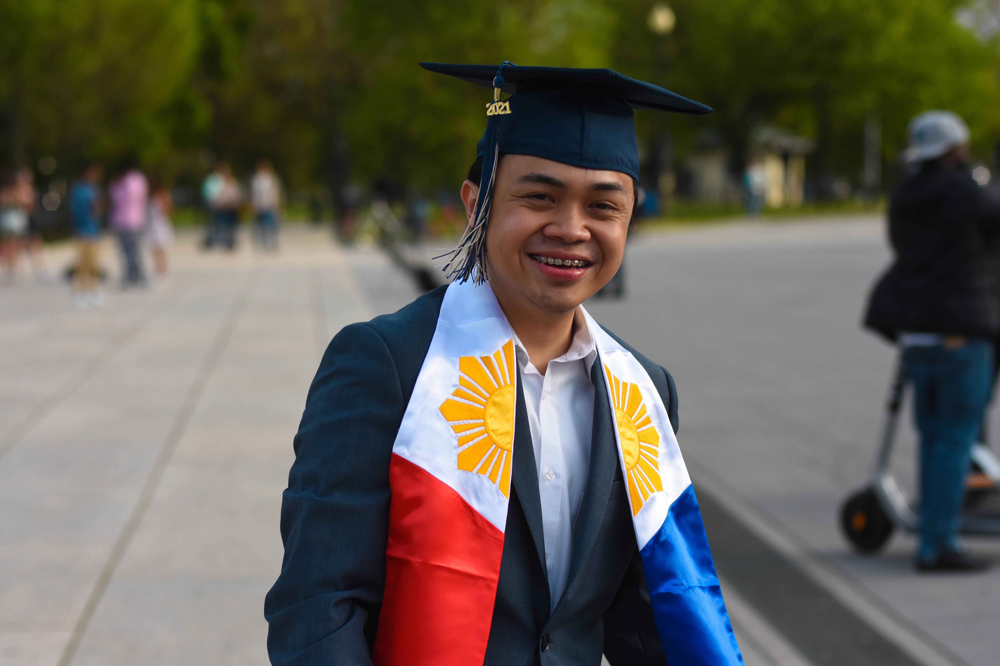

Meet the Developer

Jekko Syquia graduated at the George Washington University with
a bachelor of science in computer science. He is enthusiastic
about handheld devices, augmented and virtual reality
development, and computer graphics.
Also passionate about
graphics, Jekko was a winner at the Adobe Creative Jam of 2018
for graphics. During his time at GW, Jekko worked as a senior
laboratory technician and web developer at the School of
Engineering and Applied Sciences. He has worked closely with the
faculty to facilitate the judging of the Research and
Development showcase and Festival of Animation.
Recently, he was
awarded The Gary and Judy Bard Entrepreneurial Engineering
Endowment Award at the George Washington University recognizing his Android
application PhotoComposer. Jekko is looking forward to entering
mobile/software/VR/AR development as a professional career.
Jekko is from Waldorf, Maryland.